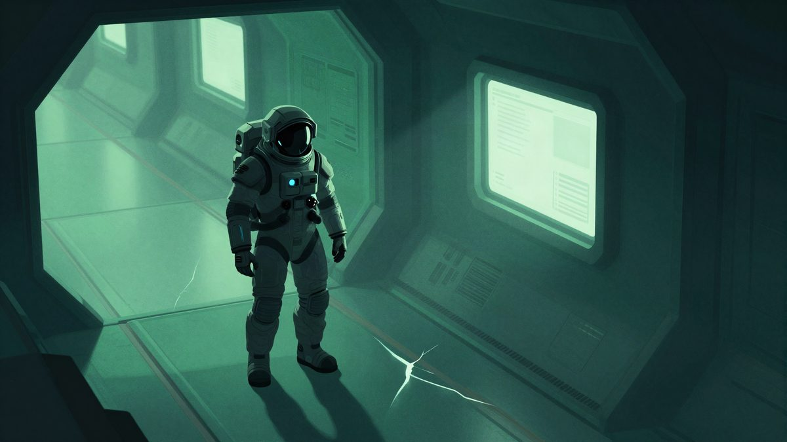

Korisnik je uz Claudea gotovo uklonio stutter iz Dead Space remakea, mod Ishimura Patch opazili su Wccftech i Digital Foundry

Korisnik Reddita napravio je mod Ishimura Patch, koji prema njegovim riječima gotovo posve uklanja stutter iz remakea igre Dead Space iz 2023. Mod su spomenuli Wccftech i Digital Foundry. Nastao je uz Claudea, više od stotinu sati rada kroz otprilike tri tjedna i automatizirano testiranje, a dostupan je na Nexus Modsu.
Remake igre Dead Space iz 2023. od izlaska muči stutter: pri prelasku iz jednog dijela broda u drugi slika se zaledi na 250 milisekundi i dulje. Jedan igrač to je pokušao riješiti uz Claudea, a rezultat je mod Ishimura Patch, koji su spomenuli Wccftech i Digital Foundry. Digital Foundry mu je posvetio kratak dio u jednom od svojih videa.
Autor moda, koji je svoje iskustvo objavio na Redditu, kaže da ima samo osnovno programersko znanje. Tvrdi da je igra bila otprilike 80 posto popravljena već prvog dana. Otada je, prema vlastitim riječima, uložio više od stotinu sati kroz otprilike tri tjedna, uglavnom usmjeravajući Claudea i pokrećući testove. Kod sam ne čita.
Problem bez izvornog koda
Stutter se pojavljuje na granicama područja, gdje igra učitava sljedeći dio okoliša. Engine je zatvoren i izvorni kod igre nije dostupan, pa je Claude morao reverse engineeringom analizirati sam izvršni file. Autor na početku nije znao što uzrokuje zastoje, pa mu je trebao način da izmjeri utječe li svaka promjena na rezultat.
Graf frame timea pri prelasku granice nije bio dovoljan jer se svaki prolaz razlikovao. Zato je Claude napravio program koji snima igračev input i vraća Isaaca na putanju kad skrene, a povezan je s koordinatama kamere. Program sam pokreće igru i svaki put na isti način prevodi lika preko granice uz pomicanje kamere. Autor kaže da je margina pogreške vrlo mala.
Testiranje bez nadzora
Zato Claude može izvoditi testove bez nadzora dok je autor na poslu ili spava. Kao primjer autor navodi crash. Opisao ga je Claudeu i naveo područje u kojem se dogodio, iako za to područje nije bilo snimljene rute. Claude je učitao save u tom dijelu igre, pomoću screenshotova pronašao mjesto pada, smislio kako ga uvijek reproducirati i potom ga popravio.
Prema autoru, stutter je na njegovu računalu praktički nestao, no rezultati mogu ovisiti o hardwareu. Dodaje da su Digital Foundry i Wccftech smatrali problem već riješenim, ali da je mod od njihova pregleda dodatno poboljšao. Ishimura Patch dostupan je na Nexus Modsu.
Izvor: Reddit r/ClaudeAI
Povezani članci
 Claude je napisao i istrenirao jezični model za DOS od 367.000 parametara koji stane na disketu15. studenoga 2026.
Claude je napisao i istrenirao jezični model za DOS od 367.000 parametara koji stane na disketu15. studenoga 2026.- Mario 64 u mixed realityju: igra radi u pravom 3D-u na stolu, 90 FPS-a na PICO headsetu30. listopada 2026.
- Mod za Oblivion Remastered uz Claude diže FPS do 48% i smanjuje zastajkivanje za 90%20. listopada 2026.